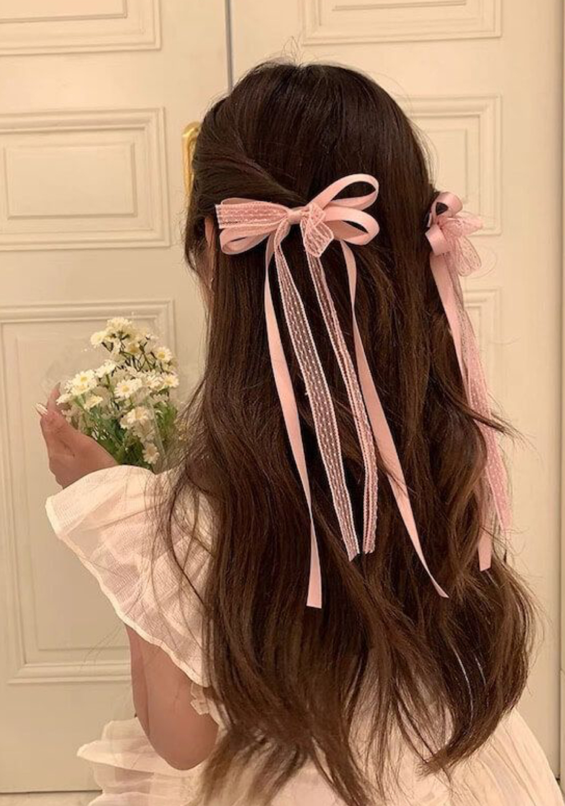
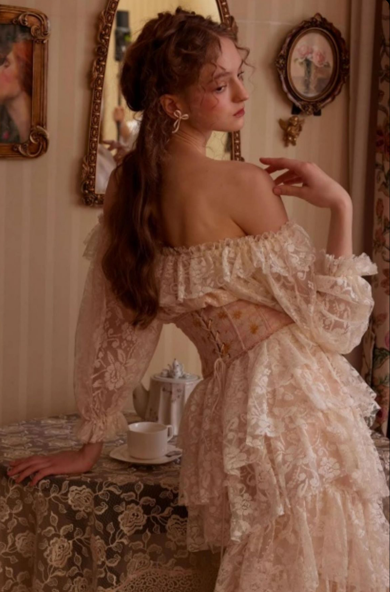
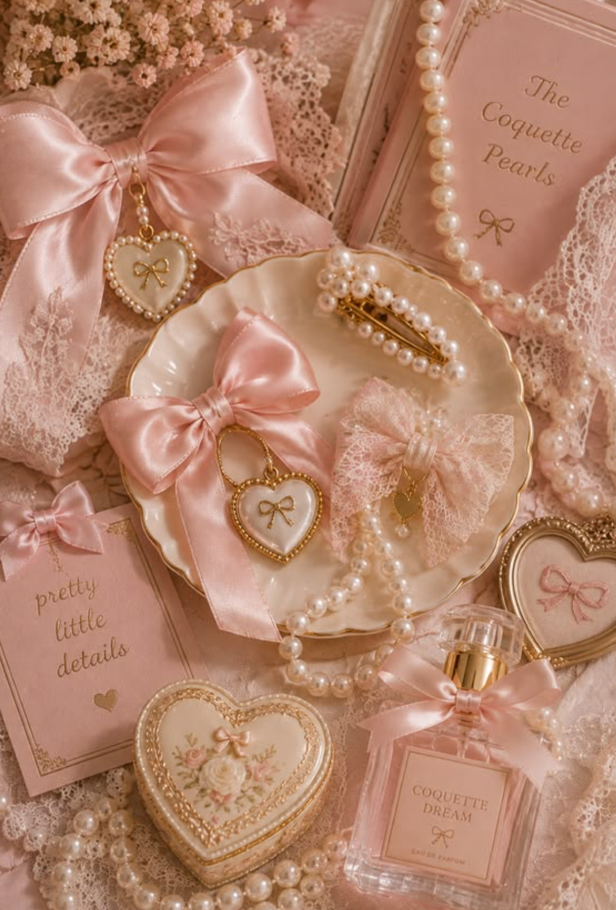

The Bow's Comeback
Bows made their comeback in style, and people are finding new ways to add them to their daily outfits/looks.
Read ArticleISSUE NO. 01 (The Romance In Change)
A celebration of pearls, bows, lace, and the little things that adds on fashion to make it beautiful.
Explore ISSUE
Bows made their comeback in style, and people are finding new ways to add them to their daily outfits/looks.
Read Article
From beautiful lace and pearls details to classic outfits, vintage fashion keeps on inspiring today's styles.
Read Article
Soft ribbons, classic pearls, and simple accessories are all tiny details that can bring elegance to any outfit.
Read Article